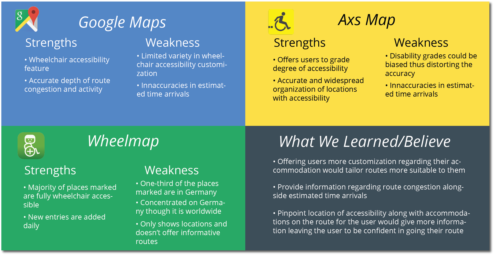
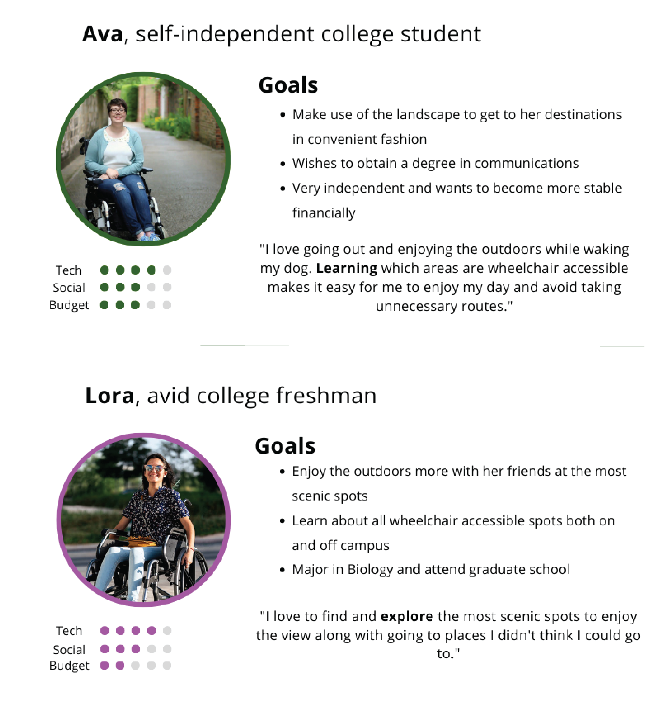
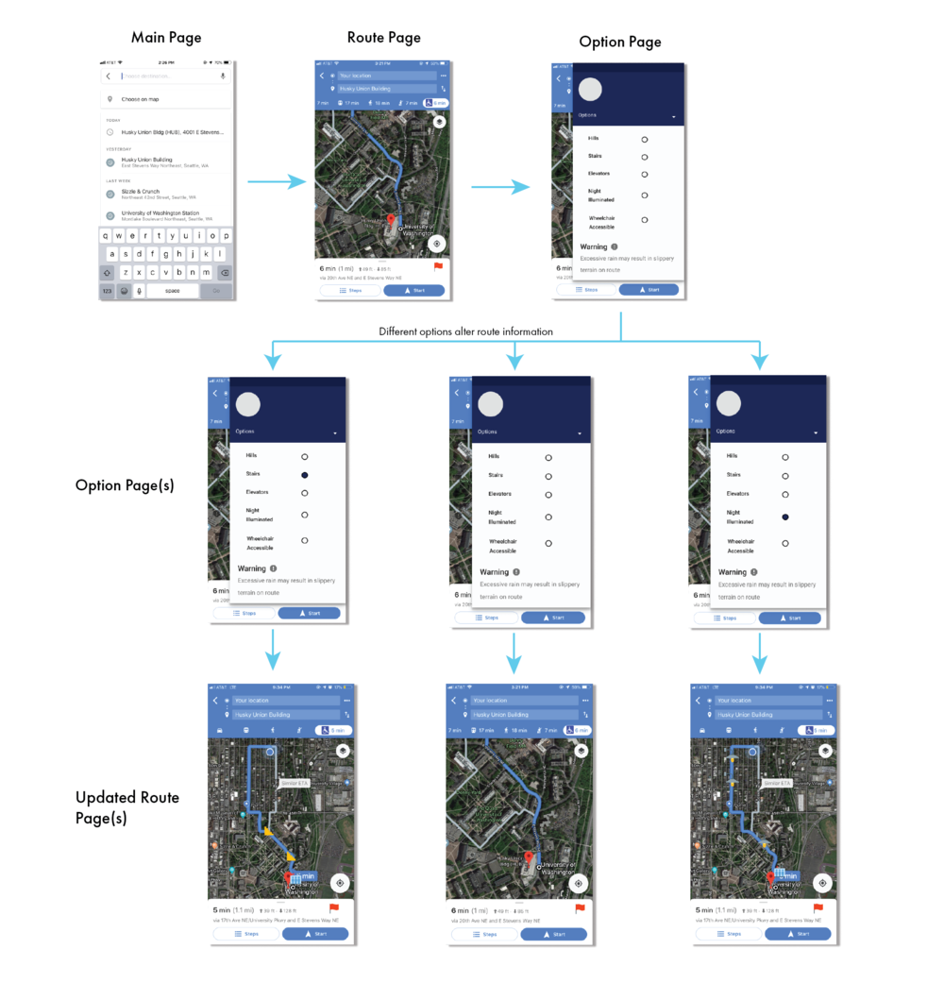

RampUp is an application that allows user with different disabilities decide and choose their own accomodations on their respected constructed route.
Problem Statement
Around 3.3 million wheelchair users in the United States have have trouble searching for reliable and consistent resources of information to help guide them around inconvenient obstacles (hills, steps, non-accessible restrooms, etc.) from point A to point B. Furthermore, traditional mapping doesn’t include these accommodations, thus making it harder for individuals to safely follow their route. We decided to tackle these issues by offering a solution that would accommodate the our users efficiently and effectively.
Competitive Analysis
In order to better understand the needs of our audience along with their current available options, we looked further into current popular resources on the market and analyzed their strengths and weaknesses. Furthermore, we comprehensively brainstormed what be believe would offer users more control and reliability along with how we can effectively introduce those concepts in our design.
Wireframe/Prototyping
After several sketches and iterations of brainstorming, we came up with a few solutions to address this problem including creating a hybrid wheelchair that implements a built-in GPS system with our software along with automatically transporting the user from point A to point B. Our second best solution came down to creating a multi-platform application that allows a user to map a customized route depending on your accommodations for the best convenient route possible.
User Personas
Our design fundamentally began with the creation of our personas in order to grab a profound understanding of the needs of our audiences from their perspective
User Testing
We conducted multiple moderated usability testing procedures regarding our wireframes and having the user think aloud and describe their experience. Feedback: Add estimated times and focus more on user experience with route. Changing between both the map screen and the options took a while to execute and commit. Provide more icons on the route for the user to look at and see if it accommodates them like restrooms, benches, or food sites. Have route update every 5 min or less to notify the user with real time accuracy. Evaluation: Our design needed to be more user friendly and implement smoother transitions between different screens or so. Furthermore, an addition of easier looking icons would help make it easy for the user to visually comprehend while guiding through our design.
Lo-Fi Designs + User Flow
Design Rationale
We designed the app to best fit the comprehension of our users. Detailed components that we carefully designed included the color of the route layout, blue indicates that pedestrian traffic is low to none, yellow indicates moderate traffic and red highlights heavy traffic. Accommodation options include hills, stairs, elevators, night illumination, and wheelchair accessibility to turn on the option and the same idea applies when turning it off. Warning message covers a large portion of screen to ensure the user to read it carefully and agree to move on by pressing the ‘next’ button which is phrased as “got it. We also added the warning message on the bottom of the options panel to assure the user to take cautionary steps whilst going on their route. Users of both manual and powered wheelchairs can expect to encounter major problems on most country paths, particularly those with challenging surfaces, steps, and obstructions.
Reflection
This was my first project which helped me discover and kindle my passion for UI/UX design as it incorporates bringing ‘something new to life’ and add unique and effective features along with creating a brand new experience for a specific audience which is always exciting. This project helped me dive into the design process and the necessary tools and steps to take in order to create a well-polished and effective design that will help users interact with your product in the best way possible.